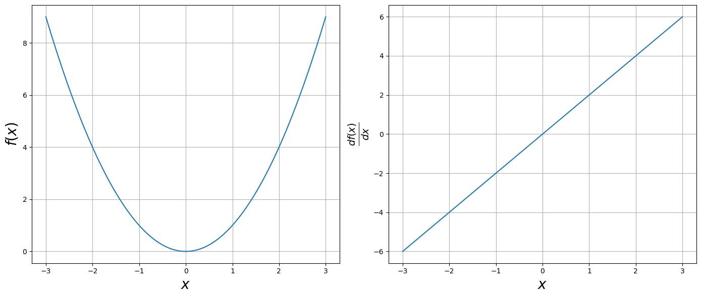

4.3. Automatic Differentiation with Jax#
In previous notebooks, you gained familiarity with symbolic manipulations using SymPy, for example, taking derivatives. You could use SymPy to take a derivative and evaluate it, though this is not generally practical in machine learning. Automatic differentiation (AD) is. Many packages have automatic differentiation capabilities, including PyTorch and TensorFlow. I prefer JAX; hence, it is what we will use in this course.
JAX is a high-performance library for numerical computing that enables automatic differentiation, making it useful for machine learning, scientific computing, and optimization tasks.
In this notebook we will learn how to calculate gradients, Jacobians, and Hessians using JAX. These derivative operators are used in numerical optimization. Most neural networks use gradient-based numerical optimization methods to solve for the network parameters. Understanding how derivatives work and how to calculate them is necessary to have a deep understanding of how many machine learning methods work.
4.3.1. Automatic Differentiation#
Automatic differentiation is a technique that computes partial derivatives using the chain rule. Unlike numerical differentiation (finite difference methods), which can suffer from precision issues (round-off error and truncation error), or symbolic differentiation (which can be computationally expensive), AD provides a balance of accuracy and performance.
In this notebook we will use the following automatic derivative methods:
jax.grad()– Computes gradients of scalar-valued functionsjax.jacobian()– Computes Jacobians (partial derivatives of vector-valued functions)jax.hessian()– Computes second-order derivatives
JAX NumPy versus NumPy
JAX provides an alternative to NumPy that is optimized for automatic differentiation and accelerated computations (GPU/TPU support) while maintaining a familiar NumPy-like API.
We will use jnp for jax.numpy, as shown in the code below.
Two things to keep in mind:
JAX arrays are immutable
JAX derivatives use floats
This notebook follows a learn by example approach. You might find it useful to code along with the examples on your own.
import jax
import jax.numpy as jnp
from jax import grad, jacobian, hessian, jacfwd, jacrev
from jax import vmap, jit
import timeit
%matplotlib inline
import matplotlib.pyplot as plt
4.3.2. Derivative with Jax grad function#
Use Jax grad function to take the derivative of $\(f(x) = x^2\)$.
An example code.
def func(x):
return x**2
dfunc = grad(func)
Note that for the Jax grad function:
the argument must be a float
it only works for scalar inputs, not arrays
def func(x):
return x**2
# derivative of the above function
dfunc=grad(func)
# test output
dfunc(3.0)
Array(6., dtype=float32, weak_type=True)
x=jnp.linspace(-3,3, 100)
fig=plt.figure(figsize=(14,6))
ax=fig.add_subplot(121)
ax.set_xlabel(r"$x$", size=20)
ax.set_ylabel(r"$f(x)$", size=20)
ax.plot(x, func(x))
ax.grid()
df_array=jnp.array([dfunc(val) for val in x])
ax=fig.add_subplot(122)
ax.set_xlabel(r"$x$", size=20)
ax.set_ylabel(r"$\frac{df(x)}{dx}$", size=20)
ax.plot(x, df_array)
ax.grid()
plt.tight_layout()

Suggested Problem Use the Jax grad function to code you own example, in the same manner as above. Be sure you have a plot too.
4.3.3. Faster with JAX JIT (jax.jit) and JAX VMAP (jax.vmap)#
JAX can be sped up by using Just-In-Time (JIT) compilation and vectorized mapping (VMAP).
Example: Using jax.jit
import jax
import jax.numpy as jnp
# Define a function
def slow_fn(x):
return jnp.sin(x) + jnp.cos(x) * x**2
# Compile it with jit
fast_fn = jax.jit(slow_fn)
# Run it
x = jnp.array(3.0)
print(fast_fn(x)) # Faster execution
Note that the first call is slow due to compilation, but later calls are faster once the function is precompiled.
Vectorized mapping allows you to vectorize operations, similar to how NumPy vectorization works. This eliminates slow Python loops.
Example: combining jit and vmap
For maximum performance, you can combine jit and vmap:
fast_vectorized_fn = jax.jit(jax.vmap(slow_fn))
print(fast_vectorized_fn(x)) # Runs very fast
Below is an example of using jit and vmap, applied to our first example of grad. I used timeit to compare execution times.
def list_comprehension(x):
return jnp.array([dfunc(val) for val in x])
df_vec=vmap(dfunc)
fx_vec=jit(vmap(dfunc))
timeit.timeit(lambda :list_comprehension(x), number=10)
0.43837591700139455
timeit.timeit(lambda: df_vec(x), number=10)
0.024662292009452358
# run this twice to make sure it is compiled
timeit.timeit(lambda: fx_vec(x), number=10)
0.00779341600718908
4.3.4. Gradient with grad function#
The gradient is
Example Let us try a two dimensional case, \(f(x,y) = x^2 + 3y^3\). The gradient is \( \nabla f = 2x + 9y^2\).
def func(x):
return x**2 + 2*y**3
df = grad(func)
def func(x):
return x[0]**2 + 3*x[1]**3
df = grad(func)
x = jnp.array([1.,2.])
func([1,2])
25
df(x)
Array([ 2., 36.], dtype=float32)
Example Use the jax grad function to take the gradient of
def func(x):
x, y, z = x
return x**2 + x*y**3 + jnp.sin(z)
dfunc=grad(func)
x=jnp.array([2,2,jnp.pi])
func(x)
Array(20., dtype=float32)
dfunc(x)
Array([12., 24., -1.], dtype=float32)
4.3.5. Jacobian#
For a function \(f : \mathbb{R}^n \to \mathbb{R}^m\), the Jacobian is defined as
The elements in index notation for the Jacobian are
Example Consider the vector valued function
The Jacobian is
def f(x):
x, y = x
return jnp.array([x**2 + y**2 , x**2 + x*y])
def df(x):
x, y = x
return jnp.array([[2*x, 2*y], [2*x + y, x]])
J = jacobian(f)
x=jnp.array([2., 3.])
print("function evaluation", f(x))
print("coded Jacobian", df(x))
print("AD Jacobian", J(x))
function evaluation [13. 10.]
coded Jacobian [[4. 6.]
[7. 2.]]
AD Jacobian [[4. 6.]
[7. 2.]]
Example Using Jax code the Jacobian for
4.3.6. Hessian#
The Hessian matrix is a square matrix of second-order partial derivatives of a scalar function. Given a twice-differentiable function \(( f: \mathbb{R}^n \to \mathbb{R} )\), the Hessian matrix \(H\) is defined as:
Example
Computing second-order derivatives:
def f(x):
x,y=x
return x**3 + y**2 + x*y
def ddf(x):
x,y=x
return jnp.array([[6*x, 1],[1, 2]])
H=hessian(f)
x=jnp.array([3.,2.])
print("function evaluation", f(x))
print("coded Hessian", ddf(x))
print("AD Hessian", H(x))
function evaluation 37.0
coded Hessian [[18. 1.]
[ 1. 2.]]
AD Hessian [[18. 1.]
[ 1. 2.]]
Suggested Problem Code your own example of using Jax hessian, in the same manner as the above example.